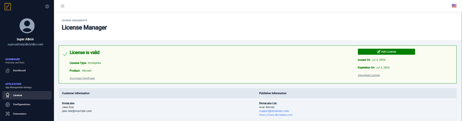

License Manager
From the left navigation pane, click on License under APPLICATION to open the License Manager.

From this page, administrators can:
- View details relevant to the configured vScrawl license file, including:
- License type
- Product name
- License period
- Customer information (to whom the license file was issued)
- Review limits applied by the license file on various licensed modules.
- Download the license file signing certificate and the license file itself for verifying the signature on the license file.
- Configure a new license file if:
- The current license is about to expire.
- A new license is required to enable additional application modules.
A new license file can be requested by contacting the respective sales representative or by writing to info@dictalabs.com.